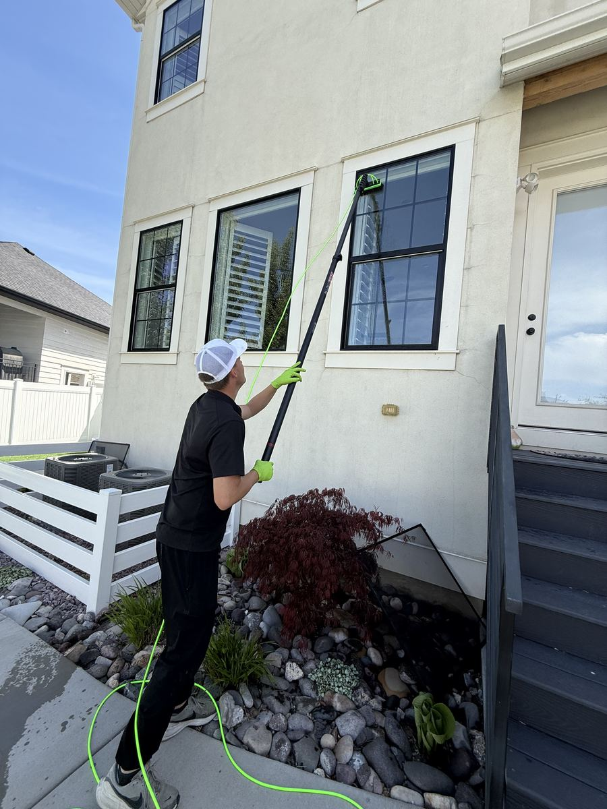
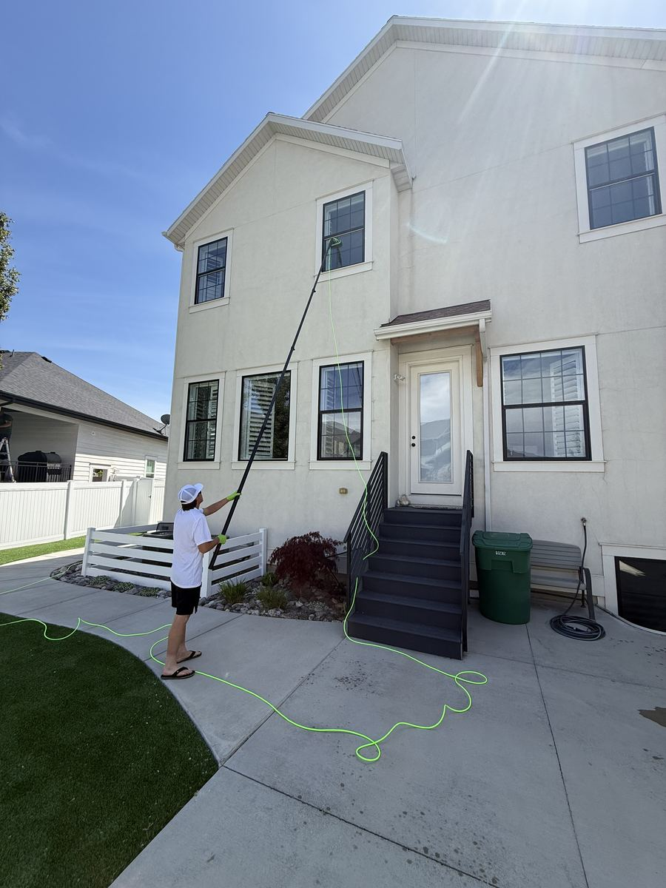
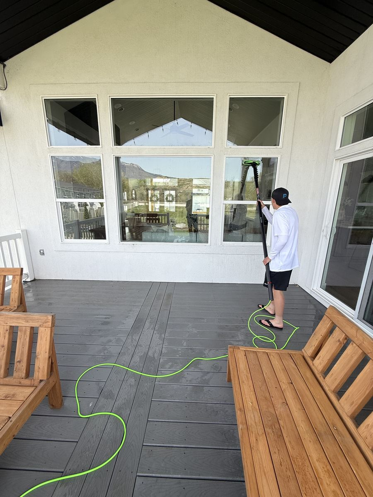
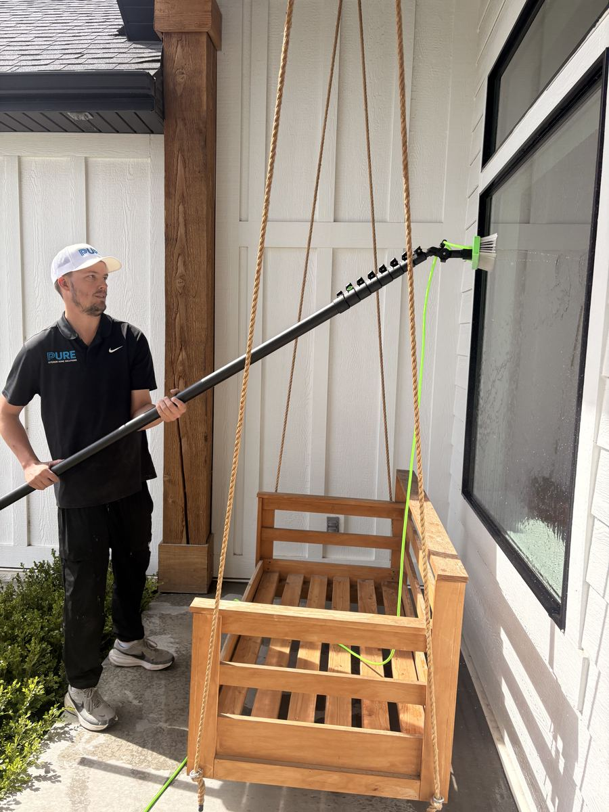
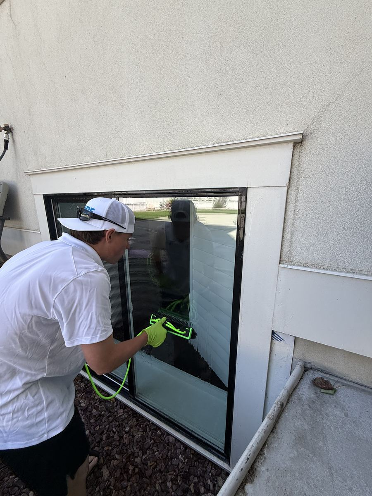
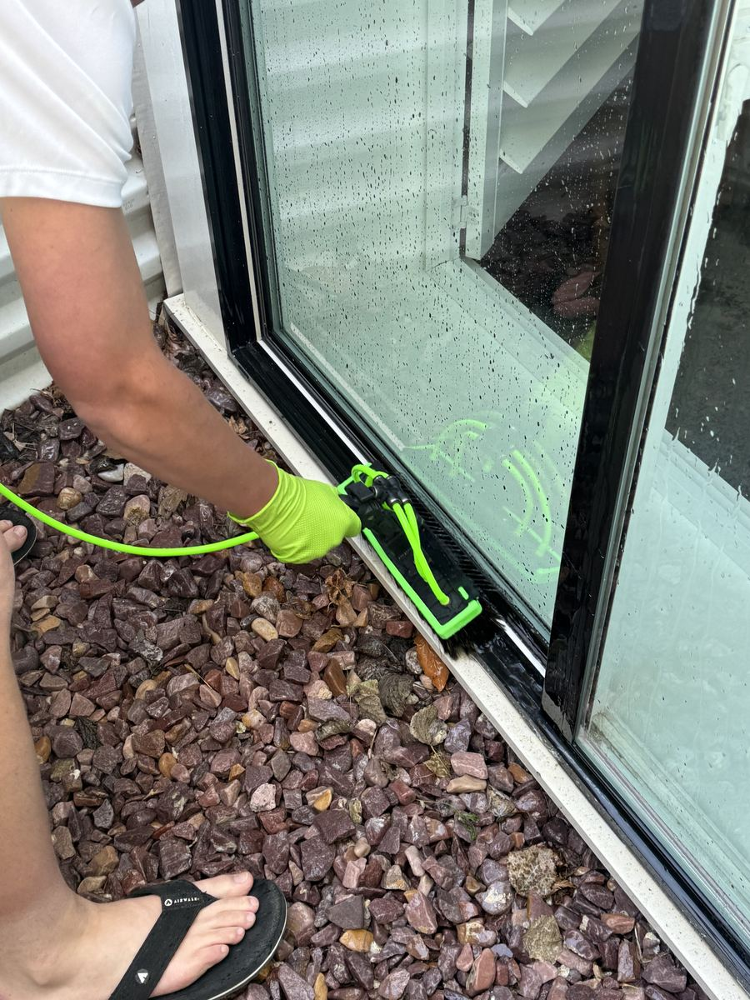

Specialty GlassFarmington, UTMay 2025
Skylight Deep Clean — The Job Most Companies Skip
Skylights are the forgotten surface of every home. They get hammered by UV, hard water, pollen, and bird traffic all year — and most window washers either can't reach them or just don't bother. This homeowner in Farmington had a large flat-glass skylight panel that hadn't been touched in years. The glass was cloudy, streaky, and practically opaque from mineral deposits and oxidation.
The Pure Team got up on the roof with a brush and pure water system, scrubbed out every deposit, and squeegeed it clean. The homeowner said the difference in natural light coming into their living room was immediate — like swapping out a frosted light fixture for a clear one. We also cleared the surrounding frame and drainage channel while we were up there.
Book a Skylight Clean


Window WashingBountiful, UTApril 2025
Two-Story Full Home Window Wash
This Bountiful home had been through a full Utah winter — hard water from sprinklers, wind-blown dust, and a season of condensation had left every window looking foggy and dull. The homeowner wanted a full clean inside and out before family came in from out of town.
Using our water-fed pole system with 0-PPM pure water, we covered all two stories without a ladder — no risk of leaning equipment against the home, no marks left on the siding. Every pane from ground level to the master bedroom came out streak-free and crystal clear.
Get a Window Wash Quote
Window WashingLayton, UTMarch 2025
Post-Construction Window Clean on a New Build
New construction is great — until you notice that every window has paint overspray, sticker residue, and concrete dust baked onto the glass. This modern home in Layton had just passed final inspection and the owners wanted it spotless before move-in day.
Post-construction window cleaning is a specialty — it requires careful razor blade work on each pane to lift surface contamination without scratching the glass. The Pure Team worked panel by panel across the entire front elevation, removing all construction residue and finishing with a pure water rinse. The home looked like the photos in the listing — exactly as it was designed to look.
Request a Post-Build Clean
House WashingNorth Salt Lake, UTApril 2025
Whole-Home Exterior Soft Wash — Algae & Oxidation Gone
Stucco homes in Utah take a beating. Between irrigation overspray, heat, and shaded north-facing walls, algae and oxidation build up fast — usually faster than homeowners realize. By the time it's visible it's already been there for a season or two.
This North Salt Lake home had green algae streaking down from the roofline and a dull oxidized finish on the lower sections of the stucco. We used a low-pressure soft wash approach with a specialized cleaning solution — no pressure washing directly on stucco, which can force water into the surface and cause long-term damage. The results were dramatic and the finish was restored without any damage to the paint or texture underneath.
Book an Exterior Wash
Screen CleaningKaysville, UTMay 2025
Screen Cleaning — The Step Most Window Washers Skip
Here's something most window companies won't tell you: dirty screens undo half the benefit of a window wash. When the sun hits a grimy screen, it projects a grey haze over the glass inside — even if the glass itself is perfectly clean. Most companies just rinse screens with a garden hose and call it done.
We use the XERO Screen Cleaner — a professional stand-mounted system that scrubs every screen individually with bristles and pure water, then rinses clean. The Pure Team pulled all screens at this Kaysville home, ran every one through the system, and reinstalled them spotless. The homeowner immediately noticed more light coming through the windows, even before we touched the glass.
Add Screen Cleaning to Your Quote


Window WashingKaysville, UTApril 2025
Full Window Service on a Covered Porch Home
This grey modern home in Kaysville had a large covered outdoor living space with floor-to-ceiling windows — a beautiful feature, but one that traps humidity and makes windows extra prone to mineral buildup and spider web residue in the corners.
The job included all main-level windows, a transom panel above the garage door, and the large picture windows in the covered patio area. We pre-treated the frames and sills, then used pure water on every pane. The big transom above the garage — a notoriously overlooked spot — got the water-fed pole treatment and came out just as clean as everything else.
Get a Free Window Quote


Window WashingCenterville, UTFebruary 2025
Window Detail Work on a Stucco Home in Centerville
Ground-level windows are the ones that get the most abuse — sprinkler water, soil splash, kids' handprints, and pet nose smudges. They're also the ones people see most up close, which makes cleaning them well matter.
On this Centerville stucco home we spent extra time on the lower windows — pre-scrubbing the frames, detail-brushing into the corners where buildup hides, and finishing each pane with a pure water rinse that leaves zero streaks behind. The difference from frame to glass was immediate.
Book a Window Wash
Window WashingSouth Jordan, UTMarch 2025
The View From Inside — This Is Why We Do It
This one says it all. After a full window wash at a home in South Jordan, the homeowner sent us this photo from their living room looking out through their large picture window. Blue sky, clean glass, no haze, no water spots, no smudges — just a perfect view of the neighborhood.
People often don't realize how much dirty windows affect the feel of a room. Light quality changes, the view feels muted, and the whole space feels less bright. A professional window wash — done with pure water and the right technique — restores that clarity completely. This is what your home should look like from the inside out.
See Your View This Clearly